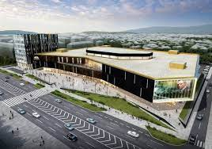
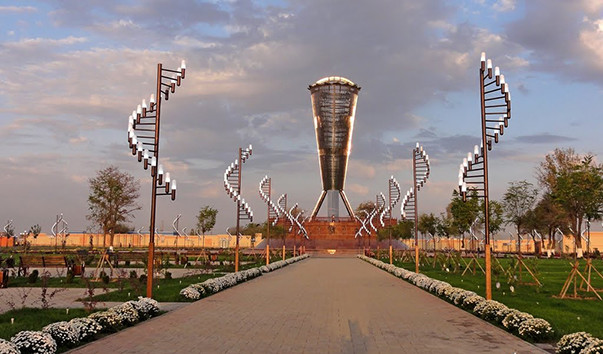
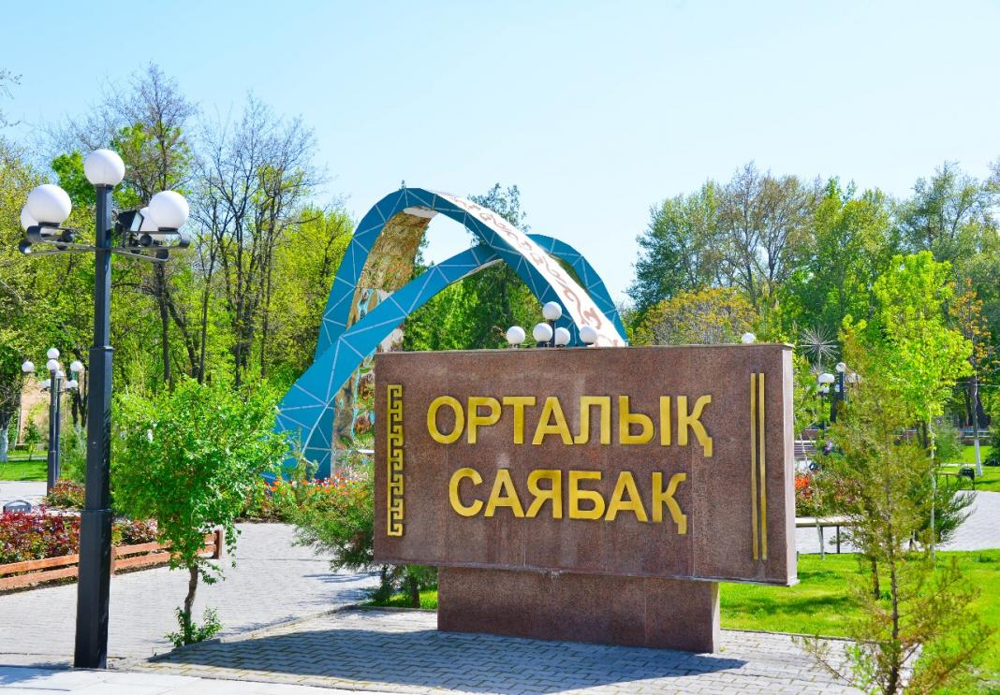
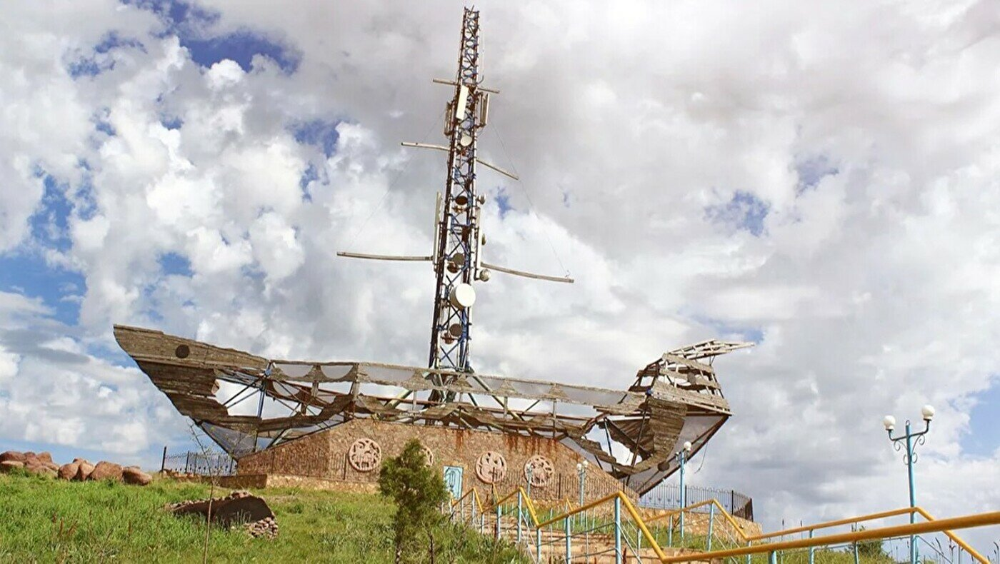

Shymkent Plaza

SHYMKENT PLAZA самый большой торгово-развлекательный центр в городе Шымкент, общая площадь
которого составляет 48 400 кв.м. Архитектурную разработку нового проекта компания TS Development
доверила именитым экспертам, авторам таких проектов, как Westfield в Лондоне, Elements в
Сингапуре, Ferrari World в Абу-Даби и DOSTYK PLAZA в Алматы – английской архитектурной компании
Benoy. Теперь этот список пополнил проект SHYMKENT PLAZA - уникальный центр международного
уровня, созданный для комфортного времяпрепровождения и шопинга.
Independence Park

Парк Независимости был открыт в октябре 2011 года в честь 20-летия независимости Казахстана.
Главный вход расположен на Кабанбай батыра, в доль всей центральной дороге стоит линия из 21
гранитных стел символизирующих последние годы. На каждом из них выгравированы главные события
года в истории страны. Центральный памятник Алтын Шанырак почитает единство народа Казахстана.
137 наций проживают в стране, так и в памятнике представлены 137 стальных колонн поддерживающих
шанырак (круглое отверстие в верхней части юрты).
Central Park

Аккуратно подстриженные газоны, свежевскопанные клумбы, которые украшают кусты роз, – сразу
видно,
что за этим старейшим парком Шымкента следят очень внимательно, будто за самым дорогим
сокровищем.
Собственно, для коммунальных компаний, следящих за его состоянием, так и есть. Ведь
центральный
парк давно уже стал визитной карточкой города. И здесь до сих пор можно найти деревья,
посаженные в
конце 19-го – начале 20 века. Как говорят в секторе благоустройства городского отдела ЖКХ,
такой
бережный подход к парку не случаен. Ведь центральный – один из старейших в Шымкенте.
Statue Keme kalgan

В горах Казыгурта находится еще один удивительный памятник «Ноев ковчег». Нельзя просто так
проехать мимо этого «летучего корабля». Памятник был создан современными художниками из
дерева и
металла. Недалеко от горы Казыгурт, на высоте 910 метров над уровнем моря, находится памятник
«Ноев
Ковчег».
Необычный памятник был установлен в 207 километрах от города Туркестан. Согласно местной
легенде,
две тысячи лет назад пророк Нух (Ной) пристал к горе Казыгурт и люди стали называть это место
«Кеме-Калган».Художники построили памятник по размерам указанным в святом источнике.